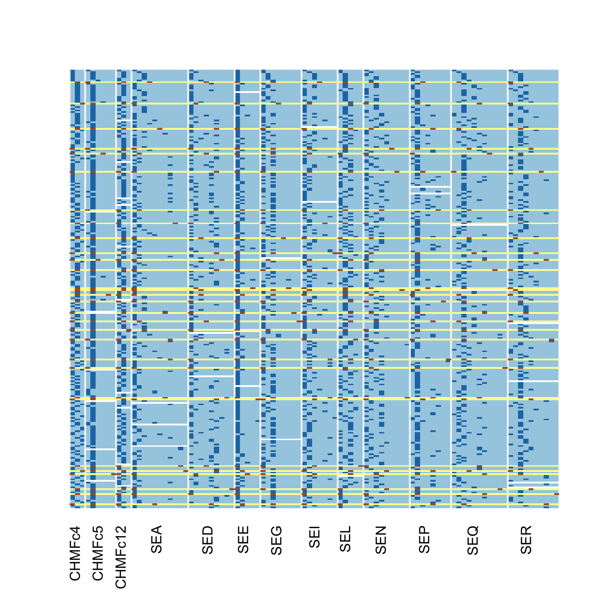
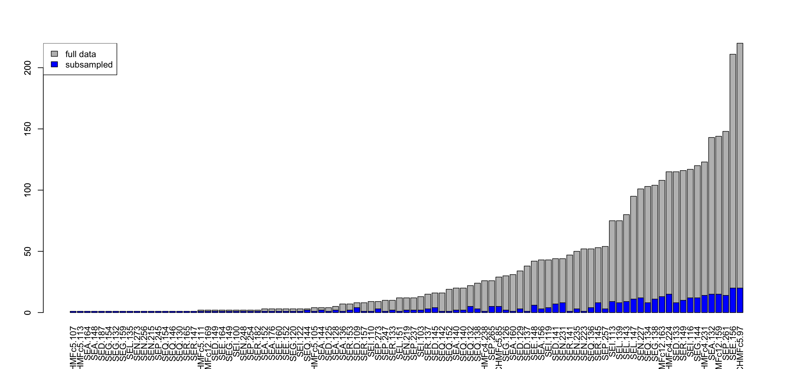
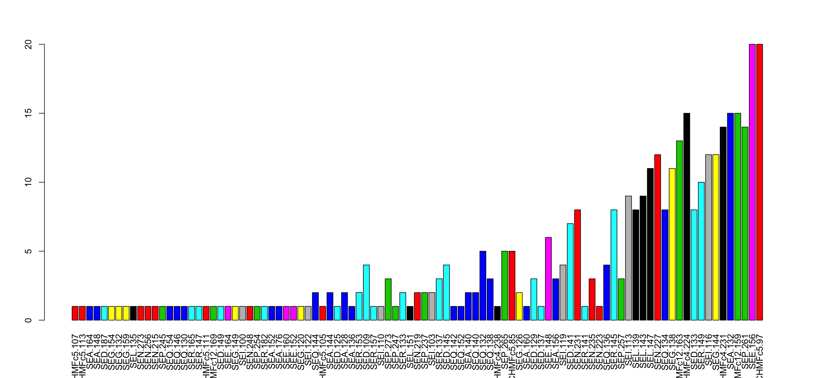

The goal of repvar is to find the minimum number of samples that will represent all variables in a data set. This was built for population genetic data, but is generalizable to any discrete data type that can be represented as an integer matrix.
Installation
This package is not currently on CRAN, but you can install it like so:
# install.packages("remotes") # or devtools or ghit
remotes::install_github("zkamvar/repvar")Example
Here is a basic example of how you can identify the minimum set. We will use the pre-packaged monilinia data set from Everhart and Scherm 2016.
options(width = 120)
library("repvar")
data("monilinia")
dim(monilinia)
#> [1] 264 95
loci <- sapply(strsplit(colnames(monilinia), "[.]"), "[", 1)
rpv_image(monilinia, f = loci) # show the data
# Shuffle the data set 200 times to find an optimal number of samples
set.seed(2018)
id_list <- rpv_find(monilinia, n = 200, cut = TRUE, progress = FALSE)
id_list
#> [[1]]
#> [1] "A233" "A610" "A154" "A603" "A666" "A163" "A293" "A339" "A590" "A071" "A085" "A218" "A269" "A074" "A182" "A417"
#> [17] "A681" "A176" "A366" "A489" "A216" "A172" "A488" "A406" "A390" "A039" "A010" "A016" "A692" "A129"
#>
#> [[2]]
#> [1] "A233" "A610" "A154" "A603" "A666" "A163" "A293" "A339" "A590" "A071" "A085" "A218" "A269" "A074" "A182" "A417"
#> [17] "A681" "A176" "A367" "A489" "A191" "A172" "A488" "A408" "A390" "A404" "A387" "A016" "A692" "A571"
#>
#> [[3]]
#> [1] "A233" "A610" "A154" "A603" "A666" "A163" "A293" "A339" "A590" "A071" "A085" "A218" "A269" "A074" "A182" "A417"
#> [17] "A681" "A176" "A367" "A522" "A191" "A172" "A488" "A408" "A390" "A547" "A385" "A480" "A692" "A088"
lengths(id_list)
#> [1] 30 30 30
rpv_image(monilinia, f = loci, highlight = id_list[[1]])
Here, the yellow bands highlight the IDs that we found.
Real-world example
Because you get a list of ids, it’s good to see which ones are actually useful. For this, you can calculate entropy. We will use the tidyverse to first create a table of samples and data, calculate entropy for each row, and then join them together. In general, we will want higher entropy values. For this, we will load three tidyverse packages:
library("tibble")
library("tidyr")
library("dplyr")
#>
#> Attaching package: 'dplyr'
#> The following objects are masked from 'package:stats':
#>
#> filter, lag
#> The following objects are masked from 'package:base':
#>
#> intersect, setdiff, setequal, union# Generate and filter the possible data sets ------------------------------
set.seed(2018 - 03 - 07)
res <- rpv_find(monilinia, n = 10000, cut = TRUE, progress = FALSE) %>%
tibble::enframe(name = "index", value = "ids") %>% # create a data frame of of list columns
dplyr::mutate(n = lengths(ids)) %>% # count the number of indices in each row
dplyr::rowwise() %>% # set the data frame to be computed by row
dplyr::mutate(dat = list(monilinia[ids, ,drop = FALSE])) %>% # add the original data set to each row
dplyr::mutate(nall = sum(colSums(dat, na.rm = TRUE) > 0)) # count the number of columns
# calculate entropy for each data set -------------------------------------
# The statistics returns a data frame, but because we've embedded the data,
# we must calculate this separately and then merge it later.
entro <- res %>%
dplyr::mutate(e = list(rpv_stats(dat))) %>% # calculate stats for each row
dplyr::select(index, e) %>% # retain only stats and index
tidyr::unnest() # spread out the columns
# sort by E5, and missingness. ----------------------------
res_sort <- res %>%
dplyr::inner_join(entro, by = "index") %>%
dplyr::arrange(-E5, missing)
res_sort
#> # A tibble: 50 x 10
#> index ids n dat nall eH G E5 lambda missing
#> <int> <list> <int> <list> <int> <dbl> <dbl> <dbl> <dbl> <dbl>
#> 1 46 <chr [30]> 30 <int [30 × 95]> 95 55.9 40.6 0.721 0.978 0.00877
#> 2 12 <chr [30]> 30 <int [30 × 95]> 95 55.7 40.4 0.721 0.978 0.00877
#> 3 28 <chr [30]> 30 <int [30 × 95]> 95 55.8 40.4 0.719 0.978 0.00877
#> 4 26 <chr [30]> 30 <int [30 × 95]> 95 55.5 40.2 0.719 0.978 0.00772
#> 5 17 <chr [30]> 30 <int [30 × 95]> 95 55.4 40.1 0.718 0.978 0.00772
#> 6 24 <chr [30]> 30 <int [30 × 95]> 95 55.4 40.1 0.718 0.978 0.00772
#> 7 41 <chr [30]> 30 <int [30 × 95]> 95 55.1 39.8 0.718 0.977 0.00772
#> 8 23 <chr [30]> 30 <int [30 × 95]> 95 55.1 39.8 0.717 0.977 0.00772
#> 9 48 <chr [30]> 30 <int [30 × 95]> 95 55.5 40.1 0.717 0.978 0.00596
#> 10 27 <chr [30]> 30 <int [30 × 95]> 95 55.3 39.9 0.717 0.977 0.00772
#> # ... with 40 more rowsFrom here, we can see the samples
cat(res_sort$ids[[1]], sep = ", ")
#> A233, A610, A154, A603, A666, A163, A293, A339, A590, A071, A085, A218, A269, A074, A182, A417, A681, A176, A367, A489, A191, A172, A488, A406, A390, A404, A385, A016, A692, A168We can use this to then visualize the distributon of the sub-sampled data:
mc <- colSums(monilinia, na.rm = TRUE)
barplot(sort(mc), las = 3)
rc <- colSums(res_sort$dat[[1]], na.rm = TRUE)
barplot(rc[order(mc)], xaxt = "n", add = TRUE, col = "blue")
legend("topleft", fill = c("grey", "blue"), legend = c("full data", "subsampled"))
Calculating rpv_stats by groups
We can group our variables as well.
f <- gsub("[.][0-9]+", "", colnames(monilinia))
f <- factor(f, unique(f))
entromean <- res %>%
dplyr::mutate(e = list(rpv_stats(dat, f = f))) %>% # calculate stats for each row
dplyr::select(index, e) %>% # retain only stats and index
tidyr::unnest() %>% # spread out the columns
dplyr::group_by(index) %>%
dplyr::summarize_if(is.numeric, mean) # calculate mean over all loci
# sort by E5, and missingness. ----------------------------
resmean_sort <- res %>%
dplyr::inner_join(entromean, by = "index") %>%
dplyr::arrange(-E5, missing)
resmean_sort
#> # A tibble: 50 x 10
#> index ids n dat nall eH G E5 lambda missing
#> <int> <list> <int> <list> <int> <dbl> <dbl> <dbl> <dbl> <dbl>
#> 1 46 <chr [30]> 30 <int [30 × 95]> 95 4.67 3.60 0.716 0.702 0.0103
#> 2 36 <chr [30]> 30 <int [30 × 95]> 95 4.64 3.62 0.716 0.698 0.00513
#> 3 26 <chr [30]> 30 <int [30 × 95]> 95 4.64 3.59 0.715 0.699 0.00769
#> 4 28 <chr [30]> 30 <int [30 × 95]> 95 4.67 3.62 0.715 0.700 0.0103
#> 5 17 <chr [30]> 30 <int [30 × 95]> 95 4.62 3.60 0.714 0.698 0.00769
#> 6 27 <chr [30]> 30 <int [30 × 95]> 95 4.63 3.60 0.713 0.697 0.00769
#> 7 24 <chr [30]> 30 <int [30 × 95]> 95 4.63 3.59 0.713 0.698 0.00769
#> 8 3 <chr [30]> 30 <int [30 × 95]> 95 4.62 3.59 0.713 0.696 0.00769
#> 9 20 <chr [30]> 30 <int [30 × 95]> 95 4.62 3.60 0.713 0.696 0.00513
#> 10 22 <chr [30]> 30 <int [30 × 95]> 95 4.61 3.57 0.712 0.694 0.00769
#> # ... with 40 more rowsThe factor can be used to color our barplot
rd1 <- colSums(resmean_sort$dat[[1]], na.rm = TRUE)
barplot(rd1[order(mc)], las = 3, col = f[order(mc)])